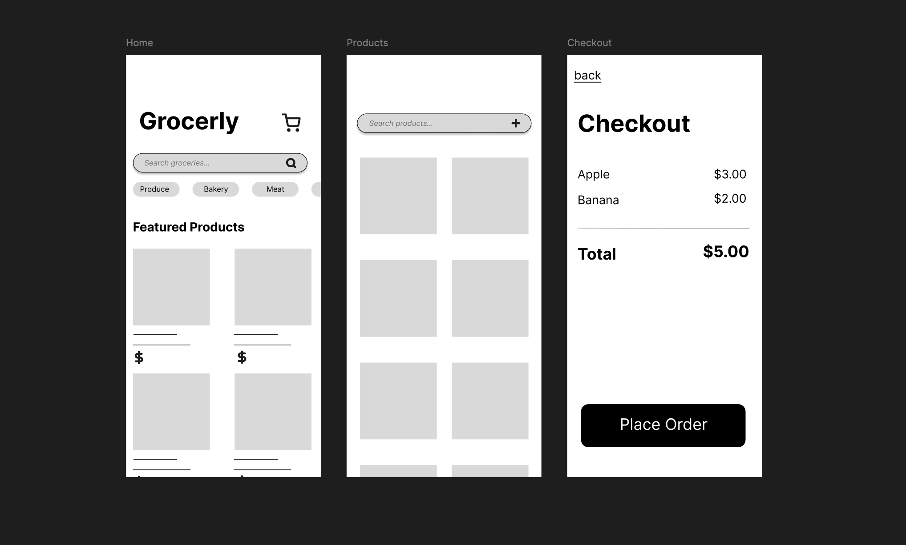

Grocerly
A human-centered design case study exploring how calendar-based planning and pantry management can reduce the mental load of weekly meal planning & grocery shopping.

Overview
What Grocerly is & what I contributed
What it is
- Meal planning + grocery shopping support
- Calendar integration for planning meals throughout the week
- Pantry tracking to reduce duplicate buying/ food waste
What I did
- UX research + ideation (SCAMPER, brain mapping)
- Wireframes → prototype iteration
- Usability/accessibility improvements based on feedback
Design goal
Make it easier to plan what you're eating throughout the week while supporting dietary constraints and reducing planning/grocery shopping effort.
Problem
Planning challenges
Meal planning is often scattered across notes, apps, and memory. Users lose track of what they planned and what they already have.
Dietary constraints
Different people have different dietary constraints including allergies or just simple preferences.
Pantry stock
Users buy duplicates or forget ingredients. Pantry tracking can reduce waste and improve decisions when planning meals.
Process
Solution
Key features
- Weekly planner with one-tap meal placement
- Meal cards with clear ingredients + dietary tags
- Allergy/restriction filters
- Pantry list with “already have” and "need" filters
Presentation
Prefer a full view? Open in PowerPoint.
Reflection
What I learned
- Meal planning is less about features and more about reducing mental load.
- Small clarity improvements (labels, structure) strongly affect confidence.
- How to apply HCI principles (cognitive load, visibility, error prevention, etc.) to real design decisions
Next improvements
- Test planner interactions with real routines
- Add accessibility checks (focus states, contrast, keyboard nav)